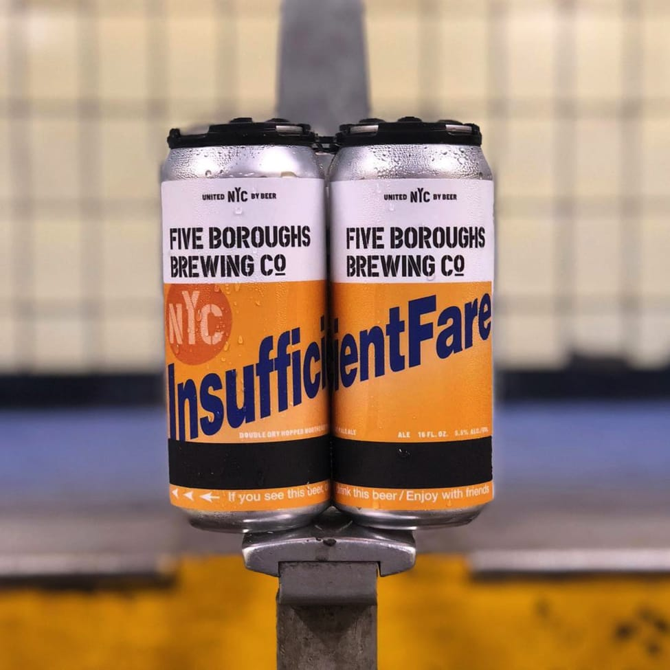
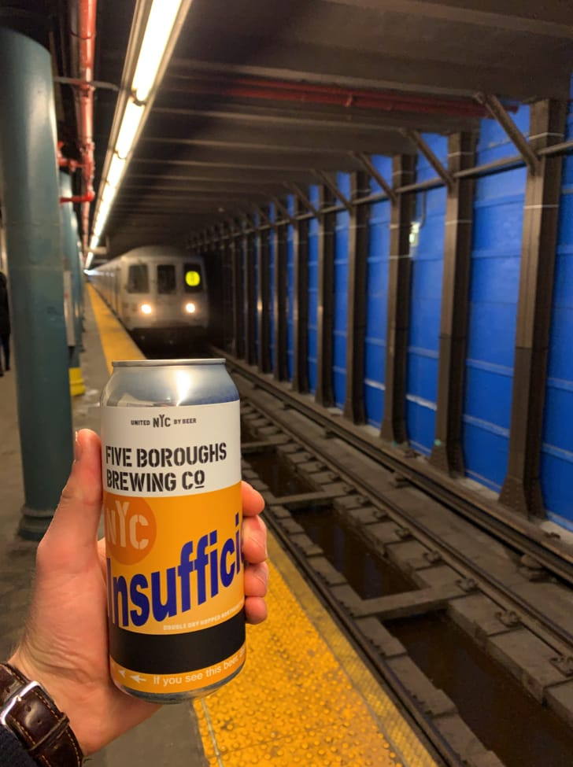

Five Boroughs Brewing Co. Makes craft beer that brings New York City together.
Are you over 21?
YES
NO
You must be of legal drinking age to join us. Sorry, kids.
Beer Reviews are penned by Nick Griffin, Five Boroughs Brewing Co.’s Head of Brewing and Quality Management.
Insufficient Fare debuted in 2017, a delectable, pillowy double dry hopped Northeast IPA packed with tropical fruit flavors. Its can — which caused quite a social media stir — is adorned with no one’s favorite, not-so-subtle reminder of suboptimal subway funds.
ABV: 5.5%
Malts: Pilsner, Wheat, Flaked Oats, Carafoam
Hops: Citra, Simcoe, Mosaic, Columbus
Insufficient Fare has one of Five Boroughs’ most unique and compelling can designs. Talk about the decision to tie this beer to our beloved subway system.
This beer was one of our first limited release hoppy beers, so we had a backlog of names we were excited to get out there. Insufficient Fare was one of the favorites and it seemed like it was the perfect name for a lower ABV northeast pale ale. While the name is great, the artwork is what really made it take off.
Insufficient Fare is brewed with Citra, Simcoe, Mosaic, and Columbus hops. Talk about the interplay between this quartet of American varietals.
This is a classic combination of hops. Citra and Mosaic bring nice tropical fruit and citrus notes, while Simcoe and Columbus have more of a piney and herbal character. By using them together you can get a nice balance of those characteristics. In this beer there is twice as much Citra/Mosaic than Columbus/Simcoe.
What are the other notable characteristics of this beer?
I like the touch of bitterness that balances out the sweet malt and fruity hops. We always try to make especially well-balanced beer and I think this one came out nice.
How does this beer fit into the broader Five Boroughs’ beer portfolio?
Insufficient Fare is one of our limited release hoppy beers, so it comes around every once in a while. This rotating series of small batch beers allows us to experiment with different hops and brewing techniques. They are available in 16oz cans and on draft in limited amounts.
Appearance: Hazy gold with a thick white head
Aroma: Tropical fruit and citrus peel with a touch of pine and sweet malt
Taste: Papaya and citrus with a pithy bitterness
Mouthfeel: Fluffy and soft
Food Pairings: Sharp cheese, salads with bitter greens, really anything with acid or bitterness